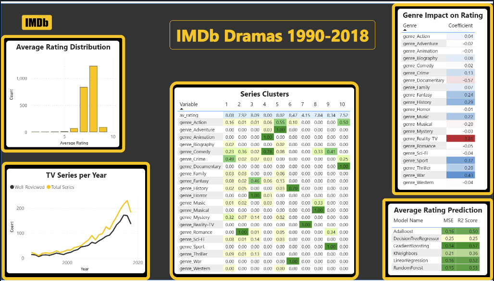
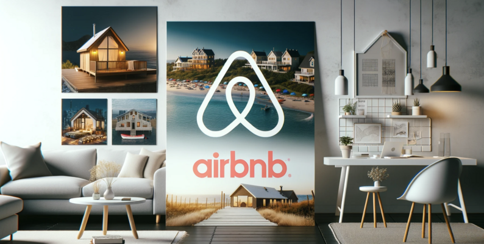
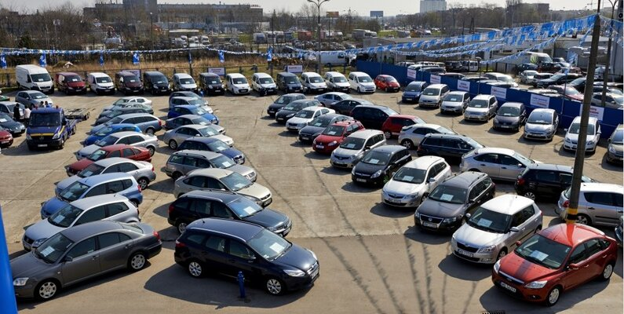

Tidy Tuesday Analyses
Pandas
Matplotlib
Scikit-Learn
Power BI
Scikit-Learn
Tableau
Plotly
XGBoost
Project Overview
These are a collection of data analyses curated by the Data Science Learning Community (dslc.io). Click on an analysis below to go to its Github repo.
Project Flow
- Decide on a research question
- Clean data
- Explore data using a variety of methods
- Perform analyses on the dataset using various models
- Visualize the results
- If applicable, create a dashboard for findings
Analyses
Fraud Classification
Analysis of a credit card fraud dataset and prediction of fraudulent transactions
ReportAnime Recommender System
A content based filtering model and a collaborative filtering model for a MyAnimeList user dataset
Content-Based Report Collaborative-Based Report

IMDB Dramas Clustering
Analysis of trends within a dataset of IMDB dramas, and a clustering analysis of types of dramas using KSmeans
Exploratory Analysis Directed Analysis Dashboard

